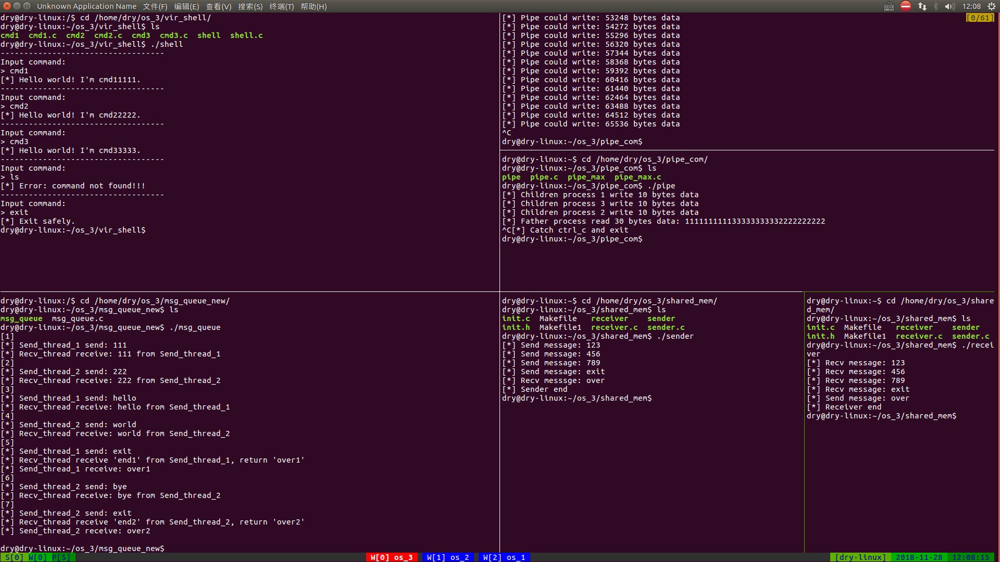
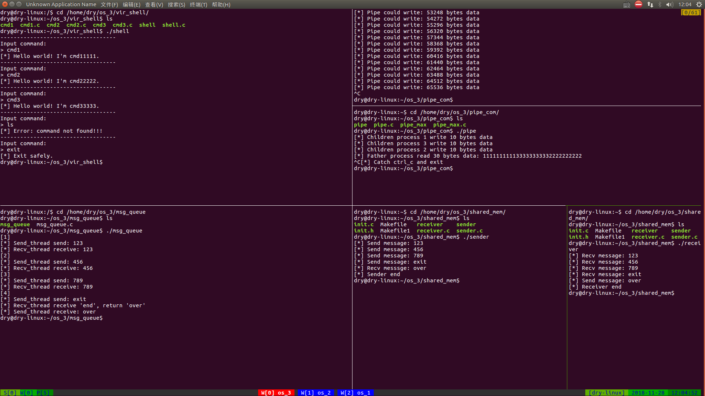

多个并发运行的协作进程间通常需要进行信息交换，称为进程通信。
像这样：
2
3
4
5
...
[*] Process_2：啊？？？不是，我钓鱼去！
...
[*] Process_1：嗨！！！我还以为你钓鱼去呢。
Folder准备
1 | cd /home/user |
[*] Caution! 具体执行时 user 是你的用户名，若无强调，后面出现的所有 user 亦然
模拟shell
实验要求
实现一个模拟的shell：
编写三个不同的程序 cmd1.c，cmd2.c，cmd3.c，每个程序的功能自定，分别编译成可执行文件 cmd1，cmd2，cmd3。然后再编写一个程序，模拟 shell 程序的功能，能根据用户输入的字符串（表示相应的命令名），去为相应的命令创建子进程并让它去执行相应的程序，而父进程则等待子进程结束，然后再等待接收下一条命令。如果接收到的命令为exit，则父进程结束；如果接收到的命令是无效命令，则显示Command not found，继续等待。
具体操作
cmd1
1 | cd /home/user/os_3/vir_shell |
1 | // /home/user/os_3/vir_shell/cmd1.c |
1 | gcc cmd1.c -o cmd1 |
cmd2
1 | vim cmd2.c |
1 | // /home/user/os_3/vir_shell/cmd2.c |
1 | gcc cmd2.c -o cmd2 |
cmd3
1 | $ vim cmd3.c |
1 | // /home/user/os_3/vir_shell/cmd3.c |
1 | gcc cmd3.c -o cmd3 |
shell
1 | vim shell.c |
1 | // /home/user/os_3/vir_shell/shell.c |
1 | gcc shell.c -o shell |
实验效果
1 | cd /home/user/os_3/vir_shell |
实验详解
fork()
fork() : 创建一个普通进程，调用一次返回两次，子进程中返回 0 ，父进程中返回 子进程pid 。清楚哪些代码块是子进程可以达到的，那些代码块是父进程可以达到的，对接下来的实验至关重要。
execl()
execl(const char *path, const char *arg, ... NULL) : 第一个参数 path 字符指针所指向要执行的文件路径， 接下来的参数代表执行该文件时传递的参数列表：argv[0] , argv[1] ... 最后一个参数须用空指针 NULL 作结束。
管道通信
实验要求
实现一个管道通信程序：
由父进程创建一个管道，然后再创建 3 个子进程，并由这三个子进程利用管道与父进程之间进行通信：子进程发送信息，父进程等三个子进程全部发完消息后再接收信息。通信的具体内容可根据自己的需要随意设计，要求能试验阻塞型读写过程中的各种情况，测试管道的默认大小，并且要实现进程间对管道的互斥访问。运行程序，观察各种情况下，进程实际读写的字节数以及进程阻塞唤醒的情况。
具体操作
父子进程通信
1 | cd /home/user/os_3/pipe_com |
1 | // /home/user/os_3/pipe_com/pipe.c |
1 | gcc pipe.c -pthread -o pipe |
管道默认大小
1 | vim pipe_max.c |
1 | // /home/user/os_3/pipe_com/pipe_max.c |
实验效果
1 | cd /home/dry/os_3/pipe_com |
实验详解
Question 1
如何保证子进程全部发完消息后，父进程再接收？pipe_max.c 中，子进程在 Line 51 对 read_psx 执行了三次 P原语操作 。而父进程在 Line 60 ~ 62 对 read_psx 执行了三次 V原语操作 后才从管道中读取数据。当然，这些的前提是 read_psx 初值为 1 。
那么，令 read_psx 初值为 3 ，对应代码将如何修改？请自行尝试。
Question 2
为何在测试管道默认大小过程中在终端不断输出，而不是在数据填满管道时输出真正默认大小？
管道被写满时，阻塞当前进程。此为前提，所以笔者的想法是，被阻塞时的数据也就是最后一行数据即为管道默认大小。
当然，还有更好的写法。再向管道写数据的过程中不必输出，只是不断修改 max_size 的值。管道写满进程中断时手动跳过，之后输出 max_size 的值。感兴趣的自行尝试。
消息队列通信 NEW
实验要求
利用 linux 的消息队列通信机制实现两个线程间的通信：
编写程序创建三个线程：sender1 线程、sender2 线程和 receive 线程，三个线程的功能描述如下：
① sender1 线程：运行函数 sender1()，它创建一个消息队列，然后，等待用户通过终端输入一串字符，将这串字符通过消息队列发送给 receiver 线程；可循环发送多个消息，直到用户输入exit为止，表示它不再发消息，最后向 receiver 线程发送消息end1，并且等待 receiver 的应答，等到应答消息后，将接收到的应答信息显示在终端屏幕上，结束程序的运行。
② sender2 线程：运行函数 sender2()，它创建一个消息队列，然后，等待用户通过终端输入一串字符，将这串字符通过消息队列发送给 receiver 线程；可循环发送多个消息，直到用户输入exit为止，表示它不再发消息，最后向 receiver 线程发送消息end2，并且等待 receiver 的应答，等到应答消息后，将接收到的应答信息显示在终端屏幕上，结束程序的运行。
③ receiver 线程运行 receive()，它通过消息队列接收来自 sender1 和 sender2 两个线程的消息，将消息显示在终端屏幕上，当收到内容为end1的消息时，就向 sender1 发送一个应答消息over1；当收到内容为end2的消息时，就向 sender2 发送一个应答消息over2；消息收完后删除消息队列。使用合适的信号量机制实现三个线程之间的同步与互斥。
具体操作
1 | cd /home/user/os_3/msg_queue |
1 | // /home/user/os_3/msg_queue/msg_queue.c |
1 | gcc msg_queue.c -pthread -o msg_queue |
实验效果
1 | ./msg_queue |
实验详解
此处不再赘述，具体请参见 NEW 的注释 以及 OLD 的详解
消息队列通信 OLD
实验要求
利用 linux 的消息队列通信机制实现两个线程间的通信：
编写程序创建两个线程：sender 线程和 receive 线程，其中 sender 线程运行函数 sender()，它创建一个消息队列，然后，循环等待用户通过终端输入一串字符，将这串字符通过消息队列发送给 receiver 线程，直到用户输入exit为止；最后，它向 receiver 线程发送消息end，并且等待 receiver 的应答，等到应答消息后，将接收到的应答信息显示在终端屏幕上，删除相关消息队列，结束程序的运行。receiver 线程运行 receive()，它通过消息队列接收来自 sender 的消息，将消息显示在终端屏幕上，直至收到内容为end的消息为止，此时，它向 sender 发送一个应答消息over，结束程序的运行。使用 无名信号量 实现两个线程之间的同步与互斥。
具体操作
1 | cd /home/user/os_3/msg_queue |
1 | // /home/user/os_3/msg_queue/msg_queue.c |
1 | gcc msg_queue.c -pthread -o msg_queue |
实验效果
1 | ./msg_queue |
实验详解
Question 1
为何代码中采用 [阻塞发送-阻塞接收] ？
生活中大多数通信为全双工，即两方均可收发消息，也就是听别人发言的时候可以插嘴。常用的通信方式还有半双工，即两方均可收发消息，但不能都发消息，也就是同时只能有一方说话，对方不许插嘴。
本实验的通信采用单工，即一方只发消息，一方只收消息。且 [阻塞发送-阻塞接收] ，就是甲说完话，乙再听话，乙听完话，甲再说话。
那么回归问题本身，为何采用这种通信方式呢？为了在终端下 好看！ 你当然可以改成 [无阻塞发送-阻塞接收]，但我保证你不会喜欢那个效果的。
共享内存通信
实验要求
利用 linux 的共享内存通信机制实现两个进程间的通信：
编写程序 sender，它创建一个共享内存，然后等待用户通过终端输入一串字符，并将这串字符通过共享内存发送给 receiver；最后，它等待 receiver 的应答，等到应答消息后，将接收到的应答信息显示在终端屏幕上，删除共享内存，结束程序的运行。编写 receiver 程序，它通过共享内存接收来自 sender 的消息，将消息显示在终端屏幕上，然后再通过该共享内存向 sender 发送一个应答消息over，结束程序的运行。使用 有名信号量 或 System V 信号量实现两个进程对共享内存的互斥及同步使用。
具体操作
1 | cd /home/user/os_3/shared_mem |
1 | // /home/user/os_3/shared_mem/init.h |
1 | vim init.c |
1 | // /home/user/os_3/shared_mem/init.c |
1 | vim sender.c |
1 | // /home/user/os_3/shared_mem/sender.c |
1 | vim receiver.c |
1 | // /home/user/os_3/shared_mem/receiver.c |
1 | vim Makefile |
1 | all: sender receiver |
[*] Caution! gcc 前是 TAB 而非多个 ，错误缩进编译时会导致中间代码 .o 文件生成失败1
2
3
4
5 make
gcc sender.c init.c -pthread -o sender
gcc receiver.c init.c -pthread -o receiver
ls
init.c init.h Makefile receiver receiver.c sender sender.c
实验效果
1 | user@user-linux:~/os_3/shared_mem$ ./sender │user@user-linux:~/os_3/shared_mem$ ./receiver |
实验详解
Question 1
函数check_value()的必要性？check_value(sem_t *semtmp, int style) 可以判断是否有 线程/进程 阻塞在 sem_wait(semtmp) 上，即 check_value(recv_psx,0) 可以判断是否有线程/进程在 读取 ，若没有，才对 recv_psx 进行 V原语操作 ，释放 读取 的资源，允许 读取 。保证了同时只能有一个线程/进程在 读取 。
附录 NEW
新版实验整体效果如下，请在新标签页打开图片(I)

附录 OLD
老版实验整体效果如下，请在新标签页打开图片(I)
